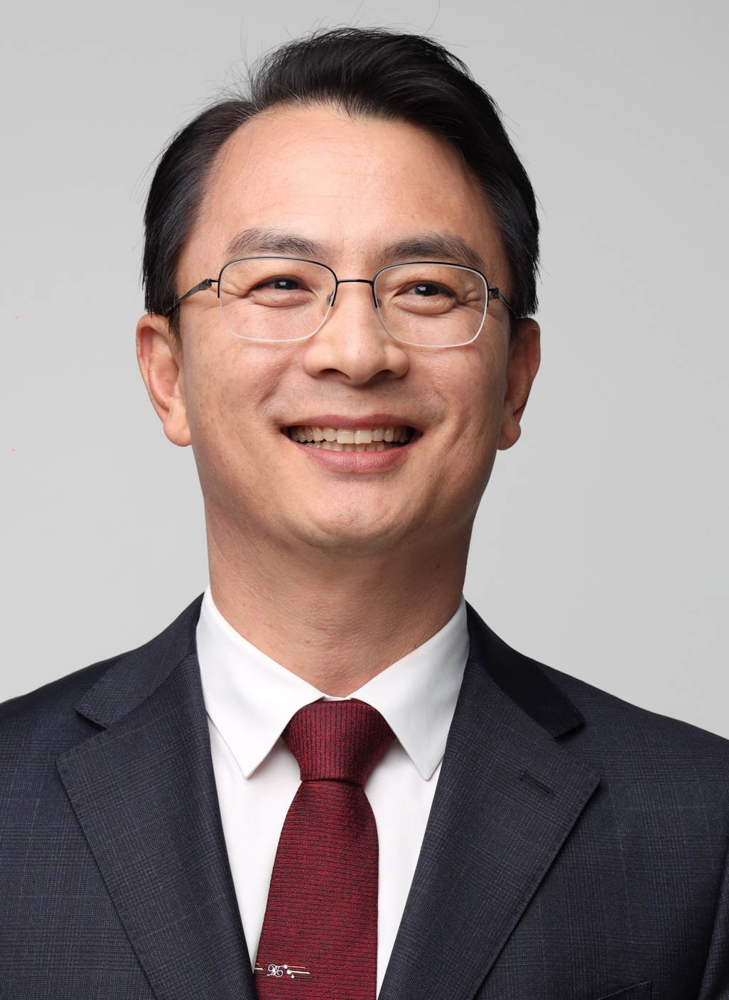

Principal Investigator

지도교수 · Principal Investigator
연구 성과 보기
Research Interests
도시열섬, 열쾌적성, 바람길, ENVI-met 미기후 모델링, Local Climate Zone
드론 다중분광/열적외 영상, 위성영상, 토지피복 분류, 3D 모델링, 디지털 트윈
미세먼지(PM2.5), 수질·녹조, 비점오염원, 탄소중립·온실가스
Education
Career